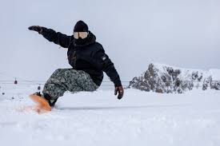
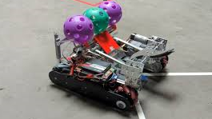

I have always enjoyed spending time with my friends, especially when we get the chance to go snowboarding together. Snowbird, located in Salt Lake City, Utah, is my favorite mountain to visit. This is because of its challenging slopes and beautiful scenery. Every trip there is filled with excitement and enjoyment of my favorite winter sport. Whether it's racing down the mountain or relaxing at the lodge afterward.

During sophomore year, I was an active member of our robotics team. We dedicated countless hours to designing and building our robot, preparing for competitions throughout the year. Although our team was decent, we often faced tough opponents and didn't always excel during matches. However, the experience taught me valuable lessons about teamwork, problem-solving, and perseverance. Being a part of the robotics team sparked my interest in engineering and technology, shaping my future aspirations.
Outside of academics and hobbies, I also enjoy giving back to my community. I volunteer at local events from time to time. The main things I go to are food banks; however, I am looking for new and similarly impactful activities. I usually do these activities with my mother, and I find it to be a good chance to support people who need it. These experiences enable me to connect with people from diverse backgrounds and appreciate the importance of teamwork.